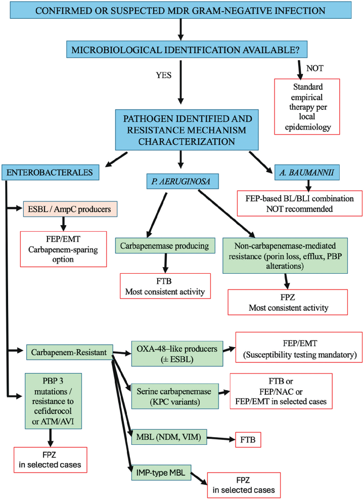

本ページで使用する略語一覧
| 略語 | 正式名称 — 解説 |
| BL/BLI | β-Lactam/β-Lactamase Inhibitor — β-ラクタム/β-ラクタマーゼ阻害薬配合剤 |
| FEP | Cefepime — セフェピム（第4世代セファロスポリン） |
| EMT | Enmetazobactam — エンメタゾバクタム（旧称 AAI101） |
| FEP/EMT | Cefepime/Enmetazobactam — 唯一承認済みのセフェピム系配合剤 |
| TAN | Taniborbactam — タニボルバクタム（旧称 VNRX-5133）。二環式ボロン酸系BLI |
| FTB | Cefepime/Taniborbactam — セフェピム/タニボルバクタム配合剤 |
| ZID | Zidebactam — ジデバクタム（旧称 WCK 5222）。DBO系BLI |
| FPZ | Cefepime/Zidebactam — セフェピム/ジデバクタム配合剤（FEP:ZID = 2g:1g） |
| NAC | Nacubactam — ナクバクタム（旧称 OP0595/RG6080）。DBO系BLI |
| FEP/NAC | Cefepime/Nacubactam — セフェピム/ナクバクタム配合剤 |
| DBO | Diazabicyclooctane — ジアザビシクロオクタン（ZID・NAC・AVI・RELが属するBLIクラス） |
| PBP | Penicillin-Binding Protein — ペニシリン結合タンパク |
| MDR | Multidrug-Resistant — 多剤耐性 |
| XDR | Extensively Drug-Resistant — 広範薬剤耐性 |
| CRE | Carbapenem-Resistant Enterobacterales — カルバペネム耐性腸内細菌目 |
| CRAB | Carbapenem-Resistant Acinetobacter baumannii — カルバペネム耐性アシネトバクター |
| DTR | Difficult-To-Treat Resistant — 治療困難耐性株 |
| ESBL | Extended-Spectrum β-Lactamase — 基質特異性拡張型βラクタマーゼ（CTX-M・SHV・TEMなど） |
| MBL | Metallo-β-Lactamase — メタロβラクタマーゼ（NDM・VIM・IMPなど）。亜鉛依存性、クラスB |
| SBL | Serine β-Lactamase — セリンβラクタマーゼ（クラスA・C・D） |
| KPC | Klebsiella pneumoniae Carbapenemase — クラスAカルバペネマーゼ |
| NDM | New Delhi Metallo-β-Lactamase — クラスB MBL |
| VIM | Verona Integron-encoded Metallo-β-Lactamase — クラスB MBL |
| IMP | Imipenemase — クラスB MBL |
| OXA | Oxacillinase — クラスDカルバペネマーゼ（OXA-48など） |
| MIC | Minimum Inhibitory Concentration — 最小発育阻止濃度 |
| PK/PD | Pharmacokinetics/Pharmacodynamics — 薬物動態/薬力学 |
| ELF | Epithelial Lining Fluid — 気道上皮被覆液（肺内濃度の指標） |
| cUTI | Complicated Urinary Tract Infection — 複雑性尿路感染症 |
| HAP | Hospital-Acquired Pneumonia — 院内肺炎 |
| VAP | Ventilator-Associated Pneumonia — 人工呼吸器関連肺炎 |
| cIAI | Complicated Intra-Abdominal Infection — 複雑性腹腔内感染症 |
| CAZ/AVI | Ceftazidime/Avibactam — セフタジジム/アビバクタム（既承認BL/BLI） |
| MEV | Meropenem/Vaborbactam — メロペネム/バボルバクタム（既承認BL/BLI） |
| IMI/REL | Imipenem/Relebactam — イミペネム/レレバクタム（既承認BL/BLI） |
| ATM/AVI | Aztreonam/Avibactam — アズトレオナム/アビバクタム（MBL+SBL対応） |
| FDC | Cefiderocol — セフィデロコル（シデロフォア型セファロスポリン） |
| mMITT | Microbiological Modified Intention-To-Treat — 微生物学的修正ITT解析集団 |
| TOC / EOT | Test Of Cure / End Of Treatment — 治癒判定時 / 治療終了時 |
SECTION 1 MDR グラム陰性菌と βラクタマーゼの分類
臨床的背景 — なぜ新規BL/BLIが必要か
カルバペネム耐性腸内細菌目（CRE）、治療困難耐性（DTR）緑膿菌、広範薬剤耐性（XDR）グラム陰性菌による感染症は、世界的な公衆衛生上の脅威となっている。グラム陰性菌においてβラクタム耐性の最も主要なメカニズムはβラクタマーゼであり、Amblerの分子分類に基づいて4つの主要クラス（A〜D）に区分される。クラスA・C・Dはセリンβラクタマーゼ（SBL）、クラスBは亜鉛イオンを必要とするメタロβラクタマーゼ（MBL）である。
これらの酵素の多様性と複数耐性機序の共存が、より広い活性スペクトルを持つ新規BLIの開発を推進してきた。既存のBL/BLI配合剤の普及に伴い、これらへの耐性も出現・拡大しており、治療の意思決定はさらに複雑化している。
セフェピム（FEP）がバックボーンとして選ばれる理由
セフェピム（第4世代セファロスポリン）は、良好な薬物動態特性と広いグラム陰性菌活性を持ち、新規BL/BLI配合剤の基盤として注目されている。FEPはAmpCβラクタマーゼに対して固有の安定性を持つ点が特徴的であり、これがESBL産生菌やAmpC産生菌に対する活性の基盤となっている。現在臨床承認されているFEP系BL/BLI配合剤はFEP/エンメタゾバクタム（FEP/EMT）のみであり、FTB・FPZ・FEP/NACは開発段階である。
SECTION 2-A FEP/EMT — エンメタゾバクタムの機序
エンメタゾバクタム（EMT、旧称AAI101）はペニシラン酸スルホン系のBLIで、CTX-M・SHV・TEMを含むESBL（クラスA）に対して強力な阻害活性を持つ。一部のプラスミド介在性AmpCβラクタマーゼ（CMY・DHAなど、クラスC）も阻害する。EMT自体は多くのAmpCに対して活性を持たないが、FEPがAmpCに対する固有の安定性を持つため、FEP/EMTとしてESBL産生菌・AmpC産生菌の両方をカバーできる相補的な組み合わせとなっている。
構造的にはタゾバクタムとトリアゾール環上のメチル基の有無で異なる。このメチル基により両性イオン性（zwitterionic）を帯び、FEPと同様の膜透過性（ペリプラズム間隙への浸透増強）が得られている。EMTはカルバペネマーゼに対して有意な阻害活性を持たず、MBL（クラスB）も阻害しない。
臨床的ポジション：ESBL・AmpC産生腸内細菌目感染症に対するカルバペネム温存（carbapenem-sparing）の選択肢として位置づけられる。
SECTION 2-B FTB — タニボルバクタムの機序
タニボルバクタム（TAN、旧称VNRX-5133）は二環式ボロン酸系BLIであり、Amblerクラス全4種に対する阻害活性を持つ（一部制限あり）。SBLに対しては遅い解離動態を持つ可逆的共有結合型阻害薬として作用し、MBLに対しては競合阻害（非常に低い阻害定数）として機能する。いずれも遷移状態模倣と保存された触媒残基との相互作用を介した阻害である。
TANは固有の抗菌活性を持たず、FEP（2g/0.5g = FTB）との固定配合剤としてのみ開発されている。MBLへのin vitro活性を持つ唯一の承認申請中BLIである点が臨床上の最大の特徴である。
SECTION 2-C FPZ・FEP/NAC — DBO系βラクタム増強薬の機序（三重作用）
ジデバクタム（ZID、旧称WCK 5222）とナクバクタム（NAC、旧称OP0595）はいずれもDBO（ジアザビシクロオクタン）系BLIであり、以下の三重作用を持つ点が他のBLIと根本的に異なる：
βラクタマーゼ阻害：クラスA・C・および一部クラスDβラクタマーゼを阻害する
固有の抗菌活性：PBP2への高親和性結合による直接の抗菌活性を持つ（βラクタマーゼ阻害とは独立）
βラクタム増強（enhancer）効果：異なるPBPへの相補的結合によりパートナーβラクタムの活性を増強する
FEPとの組み合わせでは、ZID/NACがPBP2を阻害し、FEPがPBP1a・PBP3を標的とすることで相乗的なマルチPBP標的化が実現する。この機序により、MBL産生株やポリン喪失などの非酵素的耐性機序に対しても活性が維持される（MBLを直接阻害せずとも活性を示す）。
ZIDとNACの比較では、ZIDがPBP2への親和性が高く、AmpCβラクタマーゼに対してより強力な阻害定数を示す。一方NACはOXA-48産生株に対して特に強い活性を示す場合があり、ZIDを単独使用した場合よりも優れることがある。
SECTION 3-A FEP/EMT のIn vitro活性
ESBL・AmpC産生腸内細菌目：ほぼ普遍的な活性
欧州・米国のサーベイランスコレクションにおいて、FEP/EMTはESBL・AmpC産生腸内細菌目に対してほぼ普遍的な感受性を示した。大規模in vitroスタディではMIC90がFEP単剤と比較して顕著に低下し、Serratia marcescensを除くすべての病原体で感受性率はほぼ100%に達した。高inoculum条件下でも同様の結果が報告されており、ESBL産生腸内細菌目では感受性率100%。タゾバクタムと比較してEMTはESBL産生K. pneumoniaeに対してより強力であった。
カルバペネマーゼ産生株（KPC・OXA・MBL）：活性は不均一
KPC産生株に対しては一般的に活性は乏しい。ただし、CAZ/AVI耐性変異blaKPCを持つ株の一部（17株中15株）で感受性が報告された研究もある。OXA-48産生株に対しては比較的良好な活性が示されている（EMT自体はクラスDを阻害しないが、FEPのOXA酵素に対する固有の安定性と共産生ESBLへのEMT阻害が組み合わさることで活性が発揮される）。ただし、OXA-48様K. pneumoniaeでは3.4〜13.2%の耐性率も報告されており、ルーチンの感受性試験が必須。MBL産生株に対しては活性なし。P. aeruginosaに対してはEMTがFEPの活性を増強しない。
SECTION 3-B FTB のIn vitro活性
腸内細菌目：幅広い活性（GEARS研究）
世界規模のサーベイランス（GEARS研究）において、FTBは18,350株の腸内細菌目およびP. aeruginosaに対してCAZ/AVI・MEV・ceftolozane/tazobactam（TOL/TAZ）よりも高い割合で耐性株を阻害した（MIC ≤16 mg/L）。腸内細菌目の99.7%が阻害され、VIM・AmpC・KPC産生株では100%、ESBL産生株98.7%、OXA-48様産生株98.8%に達した。NDM産生株では84.6%と若干低下するが依然高い活性を示した。
（MIC ≤16 mg/L）
産生株
（FTB最大の弱点）
（FTBで感受性）
（FTBで感受性）
NDM・VIM一部変異体に不活性
P. aeruginosa：活性はあるが変動が大きい
GEARSにおいてFTBはP. aeruginosa全体の97.4%を阻害し、メロペネム耐性株やDTR株でも良好な活性を示した。CAZ/AVI耐性株またはTOL/TAZ耐性株に対しては75%超の活性が維持された。ただし、MBL産生P. aeruginosaでの全体感受性は66.5%と低く、膜透過性欠損や非酵素的耐性機序による変動が大きい。カルバペネマーゼを持たないカルバペネム耐性P. aeruginosaに対しては感受性46.5%と低く、TOL/TazやIMI/RELと同等に留まった。
SECTION 3-C FPZ のIn vitro活性 — 最も広いスペクトル
MBL・KPC・OXA産生腸内細菌目：例外的な活性
FPZはMBL産生腸内細菌目（NDM・VIM・IMP）およびKPC・OXA-48様産生株に対して例外的な強力性を示し、FTBやATM/AVIへの耐性株を含む幅広い耐性表現型への活性が維持される。世界規模のサーベイランスで80〜100%の高い感受性率が確認されており、インドの多施設研究では全コレクションの99%超がMIC ≤8 mg/Lで阻害された（コリスチン耐性株を含む）。カルバペネマーゼを持つK. pneumoniaeのMBL産生株（OmpK35/OmpK36欠損を持つ株）に対してもFPZ活性が維持される。
活性の機序：ZIDのPBP2阻害による膜撹乱がポリン欠損に伴う膜透過性低下を部分的に克服し、FEPのPBP1a/PBP3標的化との相乗効果でMBL産生株にも活性を発揮する（MBLを直接阻害せずとも活性が保たれる）。
P. aeruginosa：MBL産生株を含むほぼ全株
P. aeruginosaに対してはブレークポイント32 µg/mLでほぼ全株が感受性を示し、MBL産生株・CAZ/AVI耐性株・TOL/TAZ耐性株・コリスチン耐性株を含む。この活性はZIDの固有抗菌活性とβラクタム増強効果に主に依存している。
CRAB・セフィデロコル耐性株への活性
CRABに対してはMIC上昇が複数の研究で報告されており活性は変動する。ただし、OXA産生株ではMIC低下が観察された。注目すべきは、ZIDがスルバクタム耐性CRAB（blaNDM-1/blaOXA-23産生株を含む）の91%でスルバクタム感受性を回復させたことである。
セフィデロコル耐性株に対しては、ZIDのPBP2直接結合（βラクタマーゼ阻害に非依存）を介して活性が維持される可能性がある。NDM産生腸内細菌目（E. coli・K. pneumoniae・P. aeruginosa）では、セフィデロコルと比較してFPZの方が有意に優れた感受性率を示したインドの多施設研究が報告されている（腸内細菌目100%、P. aeruginosaは≥90%）。
SECTION 3-D FEP/NAC のIn vitro活性 — データ限定的
FEP/NACに関するデータは他の配合剤と比較して限定的である。NACはKPC・OXA-48産生株を含むカルバペネマーゼ産生腸内細菌目に対してFEPのMICを顕著に低下させる。一部の単一アミノ酸置換変異体ではNAC結合・アシル化への干渉により感受性低下が生じる可能性がある。FEPとの組み合わせにより、NAC単独では高MIC（>4 mg/L）を示すK. pneumoniaeなどに対してもMICを顕著に低下させ、特にKPC・OXA-48産生K. pneumoniaeへの活性が確認されている。
MBL産生株に対してはZIDと同様にFEP感受性を回復させるが、Proteeeae属に対する活性は限定的。FTBが活性を持たない株（例：E. coli NDM-9）への活性報告もある。二重カルバペネマーゼ産生株・他の最終手段薬剤耐性株への活性が報告されている点も特徴。P. aeruginosaなどの非発酵菌に対してはStenotrophomonas maltophiliaを除いて活性は限定的である。
SECTION 4-A 比較PK パラメータ（Table 2の要点）
FEPと新規BLIは各種コンパートメントに対して予測可能で相補的なPK特性を示す。いずれも腎排泄が主体であり、腎機能低下時には用量調整が必要。ELF/血漿比はいずれも肺内濃度が臨床上十分であることを示唆し、HAP・VAPへの使用を支持する。
| パラメータ | FEP | EMT | TAN | ZID | NAC |
|---|---|---|---|---|---|
| 投与量 | 2 g | 0.5 g | 0.5 g | 1 g | 1 g |
| 消失半減期 (t1/2) | 2.7 h | 2.6 h | 2〜5.8 h | 1.8〜2 h | データなし |
| 分布容積 | 16.9〜20 L | 20.6〜25.3 L | FEPと同様 | FEPと同様 | データなし |
| 腎排泄（未変化体） | 約85% | 約90% | FEPと同様 | FEPと同様 | FEPと同様 |
| 血漿タンパク結合 | 約20% | 最小（0%） | <10% | 約5% | 最小（0%） |
| ELF/血漿比 | 20〜73% | 53〜62% | 15〜25% | 約40% | ヒトデータなし |
※FEPの有効性はfT>MIC（%時間）で規定され、TANはAUC/MIC（持続的なβラクタマーゼ阻害）で規定される。腎機能低下時およびRRT（腎代替療法）では用量調整が必要。
SECTION 4-B FEP/EMT — ALLIUM試験（Phase 3）
FEP/EMT（FEP 2g + EMT 0.5g q8h）vsピペラシリン/タゾバクタム（4.5g IV q8h）を比較。FEP/EMT群では11.0%（38/345例）に同時菌血症を認めた。
主要複合エンドポイント（Day 14）
主要複合エンドポイント（Day 14）
が占める割合（注意点）
主要エンドポイント：Day 14における臨床治癒＋微生物学的除菌の複合アウトカム。FEP/EMTは臨床治癒率でTZPと同等だったが、微生物学的除菌率（全体およびESBL産生腸内細菌目）で有意に優れた。有害事象発生率はほぼ同等。微生物学的再発はFEP/EMT群で少なかった。
SECTION 4-C FTB — CERTAIN-1試験（Phase 3）
436例がランダム化。拡大ITT集団でカルバペネム耐性株は10例のみで、うち8/10例がFTBで治療成功（P. aeruginosa 2例のうち成功1例・失敗1例）。菌血症合併症例（81.6%）においても良好な転帰。
治癒判定時（TOC）複合成功率
治癒判定時（TOC）複合成功率
統計学的に証明
重篤有害事象は約2%で発生。CERTAIN-2試験（NCT06168734、VAP・HAP対象）は現在中断中だが、公的な安全性上の懸念は報告されていない。
SECTION 4-D FPZ — Phase 3試験と臨床使用経験
登録完了。結果は2026年1月に提出済みだが未発表。
コンパッショネートユース（同情的使用）：XDR P. aeruginosa感染5例（骨・関節感染4例・血管内人工物感染1例）が2023〜2024年に報告されており、全例でIMI/REL・CAZ/AVIに耐性の株がFPZに感受性を示し、いずれも臨床的・画像的改善を達成した。耐性機序はクラスD βラクタマーゼ・セファロスポリン分解酵素・NDM-1・MexAB-OprM efflux過剰発現・PBP3変異などであった。NDM産生XDR P. aeruginosaによるIAI敗血症・ecthyma gangrenosum・セフィデロコル耐性XDR P. aeruginosa感染（肝移植へのブリッジ）・小児膿胸などの成功例も報告されている。
SECTION 4-E FEP/NAC — INTEGRAL-1試験（Phase 3）
約600例が登録。ベースラインではカルバペネム感受性グラム陰性菌のみ（MDR感染症ではない）。
EOT時複合成功率（mMITT）
EOT時複合成功率（mMITT）
IMI/cより優れた
SECTION 5 薬剤別の限界まとめ
| 配合剤 | 主な限界点 |
|---|---|
| FEP/EMT | カルバペネム耐性腸内細菌目への活性は不均一かつ高度に耐性機序依存。KPC産生株やOXA-48様産生株への活性はEMTによる直接カルバペネマーゼ阻害ではなく、ESBL共産生・変異KPC発現抑制・ポリン変異などの間接的機序による。HAP/VAP等での臨床証拠はPK/PDモデリングと前臨床データのみ。ALLIUM試験にはESBL非産生株が約80%含まれており、高MDR環境への外挿には限界あり。 |
| FTB | MBLカバレッジが不完全（IMP大部分・一部NDM・一部VIM変異体に不活性）。P. aeruginosaでは非酵素的耐性機序（ポリン喪失・efflux過剰発現・PBP変異）によりカバレッジが大きく変動。複数カルバペネマーゼ共産生株・ヘテロ耐性株・PBP3挿入株（セフィデロコルとの交叉耐性あり）での感受性低下。臨床試験にカルバペネム耐性・MBL産生株は少数しか含まれておらず、HAP/VAP対象のPhase 3は中断。 |
| FPZ | in vitroデータの大部分が東南アジアの施設（PBP3変異高頻度地域）からであり、欧米への一般化に限界。in vitro感受性試験（1:1比）と前臨床in vivo研究（2:1比）の比率差異が解釈を複雑化。ランダム化比較試験の結果は未公表（Phase 3結果は2026年1月提出済みだが未発表）で、コンパッショネートユースの経験のみ。 |
| FEP/NAC | 外膜透過性低下（ポリン喪失）によるNAC蓄積障害が活性を損なう可能性。特定のカルバペネマーゼ変異体・PBP変異・非酵素的耐性機序に対する系統的評価が不足。P. aeruginosaへの活性は限定的（βラクタマーゼ阻害に依存し、enhancer効果は限られる）。臨床証拠はカルバペネム感受性菌対象のINTEGRAL-1のみ。MBL産生腸内細菌目へのin vivo有効性は未証明。 |
TABLE 4 主要MDRグラム陰性菌に対するBL/BLI配合剤のIn vitro活性スペクトル
表4. 現在利用可能なβラクタム/βラクタマーゼ阻害薬配合剤および臨床開発中のセフェピム系配合剤の、主要な多剤耐性グラム陰性菌に対するin vitro活性スペクトル。活性は主にin vitro感受性データに基づく。一部の配合剤・菌種群については臨床エビデンスが限定的または未整備である。
| 抗菌薬 | ESBL+/ AmpC+ 腸内細菌目 |
CRE KPC+ |
CRE OXA-48+ |
CRE MBL+ |
XDR P. aeruginosa |
PBP3 変異株 |
CRAB |
|---|---|---|---|---|---|---|---|
| CAZ/AVI | 高 | 高 | 高 | 低 | 高 | 変動 | 低 |
| MEV | 高 | 高 | 変動 | 低 | 変動 | 変動 | 低 |
| IMI/REL | 高 | 高 | 変動 | 低 | 高 | 変動 | 低 |
| FDC | 高 | 高 | 高 | 高 | 高 | 橙：限定的 | 変動 |
| ATM/AVI | 高 | 高 | 高 | 高 | 変動 | 高 | 低 |
| FEP/EMT | 高 | 橙*a | 変動 | 低 | 低 | 低 | 低 |
| FTB | 高 | 高 | 高 | 変動*b | 変動*d | 橙：限定的 | 低 |
| FPZ | 高 | 高 | 高 | 高 | 高*e | 高 | 橙*f |
| FEP/NAC | 高 | 高 | 高 | 変動*c | 低 | 変動 | 低 |
略語：CRE: carbapenem-resistant Enterobacterales; XDR: extensively drug-resistant; CRAB: carbapenem-resistant A. baumannii; CAZ/AVI: ceftazidime/avibactam; MEV: meropenem/vaborbactam; IMI/REL: imipenem/relebactam; ATM/AVI: aztreonam/avibactam; FDC: cefiderocol
FIGURE 1 耐性機序に基づくセフェピム系配合剤の選択アルゴリズム
図1. 耐性機序に基づいた新規セフェピム（FEP）系配合剤の治療戦略の概略図。セフェピム/タニボルバクタム（FTB）やセフェピム/ジデバクタム（FPZ）のような広域活性を持つ薬剤は高度耐性菌による感染症に温存される一方、それ以外の配合剤はより耐性度の低い菌株に用いることができる。本図は、in vitro活性・βラクタマーゼプロファイル・非酵素的耐性決定因子を統合したステップワイズアプローチを示し、セフェピム系レジメンの合理的選択を支援するものである。なお、本スキームはセフェピム系配合剤間のクラス内選択のフレームワークとして意図されており、多剤耐性グラム陰性菌全般の管理に関する治療アルゴリズムではない。

FEP: cefepime; EMT: enmetazobactam; FTB: cefepime/taniborbactam; FPZ: cefepime/zidebactam; NAC: nacubactam
SECTION 6 各配合剤の臨床的位置づけ
FEP/EMT — 最も確立された選択肢（承認済み）
Phase III臨床データとFDA・EMA承認による最も確立されたFEP系配合剤。一次適応はcUTIだが、PK/PDデータはHAP・VAP・IAI・菌血症においてもESBL・AmpC産生腸内細菌目に対するカルバペネム温存の代替として使用を支持する。OXA-48産生株やその他のOXA産生腸内細菌目に対しても、感受性が確認された場合はCAZ/AVI温存の選択肢となりうる（FEPのOXA酵素安定性 + EMTによる共産生ESBLへの阻害活性の組み合わせ）。P. aeruginosaへの追加的ベネフィットはなく、使用前の感受性試験は必須。
FTB — CAZ/AVI・MEV耐性CREへの選択肢（開発中）
現在利用可能なBL/BLIへのCAZ/AVI・MEV耐性がある場合のCRE感染症、特にKPC変異体とMBL産生株への使用が有望。ATM/AVIやセフィデロコルへの代替としてもポジショニングされる。KPC変異（CAZ/AVI・vaborbactam・relebactam耐性）+ MBL産生の腸内細菌目に対するセフィデロコル温存オプションとして特に注目。NDM産生株との共産生でセフィデロコル感受性が低下した株（CMY・SHV型βラクタマーゼを共産生する株）にも有利。P. aeruginosaでは活性がより変動し、カルバペネマーゼを持たないカルバペネム耐性Pa株には限定的。正確なMBL型の同定が重要（TANが不活性な特定MBL変異体があるため）。
FPZ — XDR腸内細菌目・P. aeruginosaへの新パラダイム（開発中）
βラクタマーゼ阻害 + PBP2高親和性結合によるβラクタム増強活性（三重機序）により、MBL産生腸内細菌目・PBP3変異株・XDR P. aeruginosaを含む広域MDRグラム陰性菌に対して活性を維持する。一貫したin vitro活性・前臨床in vivoデータ・コンパッショネートユース経験から、セフィデロコル・ATM/AVI・その他のBL/BLI配合剤への選択肢が限られる場合のXDR腸内細菌目・P. aeruginosaへの価値ある選択肢となりうる。セフィデロコル耐性（鉄輸送系変異による）の場合も、FEPがポリンチャネルを介して侵入するため影響を受けにくい（理論的考察。臨床確認が必要）。
FEP/NAC — 主に腸内細菌目が対象（開発中）
FPZと同様にβラクタマーゼ阻害 + 固有抗菌活性 + βラクタム増強活性の三重機序を持つが、in vitroデータは腸内細菌目以外での活性が限定的。P. aeruginosaへの活性は選択的単離株に限り、主としてβラクタマーゼ阻害に依存し増強効果は限られる。
共通原則 — 病原体・機序駆動型アプローチ
SUMMARY キーメッセージ
出典：Luca Pipitò & Antonio Cascio. "Overview of novel cefepime-based β-lactam/β-lactamase inhibitor combinations." Expert Review of Anti-infective Therapy (06 May 2026)
DOI：https://doi.org/10.1080/14787210.2026.2669588
本資料は教育目的で作成したサマリーです。診断・治療方針の決定には必ず原典を参照してください。
制作：ICU 関谷